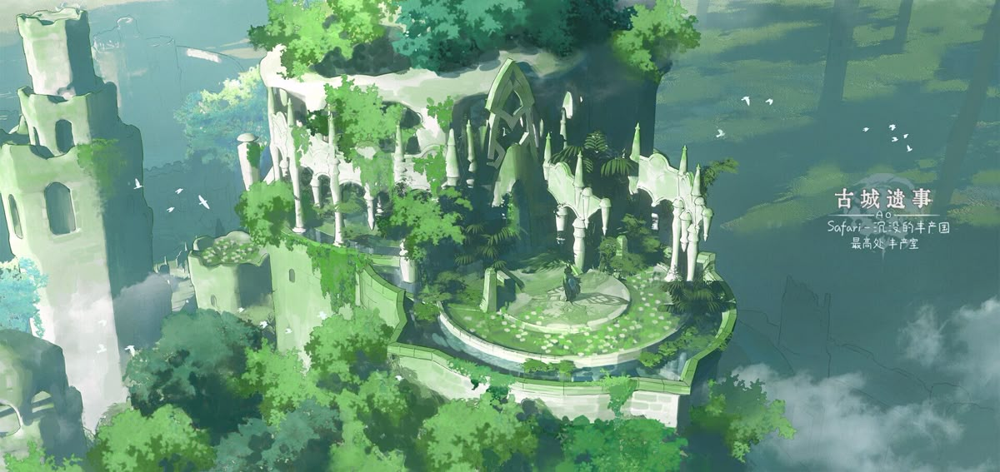

Session Report 39 already (technically the 2nd of the blog, but ya know). First some session building/prep then the report.
Urarani Loot
I mentioned last time I wanted to drum up some relevant loot of this old ritual site alongside some loot from Urarani. I did just that in the previous post here. I decided to offer them the Everbark Figurine, a Fellowmark Feather, and a Paladin’s Tear. The first two are little trinkets left near the base of the destroyed Orb, offerings for spirits by druids or Roost monks passing through.
Mechanically, the figurine lifts some of the long Journey Fatigue burden off of a 3-person Party (not that they ever actually Scout preferring to just risk it) and the speak-with-x-animal feather is just a classic TTRPG staple. The tear comes from the souljar in Urarani’s core and is specifically meant for the healer Gack to expand his Ability arsenal.
The Evergrove
The below section was actually done as prep before the session, writing it out in long-form rather than just note bullet points helped solidify concepts more, which was neat to me. First time trying this out and all.
Within this arc, which we are endearingly calling Season 2 following the conclusion of the “Calming the Water Spirits” arc, the primary goal so far has been get to the Evergrove and find Elix for information on the Idea. As such, I wanted this grand journey (of a few weeks, it’s a small island) to have a grand destination - one that was in stark contrast to the eerie, corrupted jungle they’ve been trudging through and reminiscent of the true Spirits’ Grove. I made sure to include hints in prior sessions that some barrier exists around Evergrove and scouts from Roost haven’t been able to get through. This is actually the work of Elix who is working a protection ritual around her and the Evergrove. It is keyed to let specific friends or artifacts through, one artifact of which is Taam’s staff that Abra now wields. So, the expectation set for the Party was one of having another obstacle when they get there but it’ll be subverted when Abra is able to lead everyone through into the serene, vibrant grove.
At first, I was going to have Evergrove naturally be the classic trope of the large tree with roots throughout the entire jungle and a village built within it. However, I decided to ask my players for collaborative worldbuilding on the Evergrove and built off that. If you haven’t, try this trick out; it often leads to better results! I asked the player of Gack “What’s Gack’s imagination on what the spiritual heart of a jungle looks like?”, to which they responded “A rock in the shape of a heart, maybe one with a crack going through it. In some of his dreams it glows like a Sun Shard. But rationally, he knows it to be unlikely.” The natural inclination then would be to have an ancient druid stone or some such but the awesome thought struck me that this dream could be about Elix herself. Thus, I now introduce the spiritual heart of the Spirits’ Grove: Elix Everwalk.
Elix Everwalk, a last name which she adopted from her nickname “Ever-Walking Elix” back in her youth, is the druidic caretaker of the Spirits’ Grove spiritual center - the Evergrove. I realize that’s a lot of Ever-’s going on but, uh, too lazy/too late now. She is a Dwarf Druid, and member of the original Isle’s Saviors who dealt with the Idea in the past. She, like all Dwarves in BREAK!!, was born by being carved from stone (and still is said stone, to clarify). At some point in her life, she suffered a fatal blow that cleaved her nearly in two. However, old friends made a desperate play to save her: they melted bars of Sun Gold and poured it into the cracks to “repair” her. In the years since, Taam has always joked that it is a contest between the Sun Gold and her personality which glows more.
Elix, as any great Druid does in their waning years, is in the slow, arduous process of transforming herself into a natural font of power - a great emerald crystal - for the region. Abra and Lookus haven’t seen Elix in many years at the Bazaar and it had been Taam going there to visit always. I thought this would be a fun realization as to why that is, and be powerful imagery to boot. Naturally, this process has become all mucked up on account of the Idea corrupting the jungle and Elix diverting energy towards the barrier.
Back to the jungle. Elix being this way isn’t mutually exclusive with the Evergrove being a world tree or whatever, but it did lead me to working it as a temple of Aeons past instead - overgrown, massive, awe-inspiring. I found this incredible artwork by Aobo Wang and decided to have a bit of a Western Air Temple feeling where they can climb up and finally rest away from their troubles for a spell. The Party has been pushing forward without a rest - no Downtimes or breathers - ever since Taam got possessed and I’d been looking for a natural solution to that to slow the pace briefly. I think I’ve accomplished this while simultaneously reinforcing the motivations/quests the Idea is seeking at the same time. Ideas welcome!

PLAYERS DON’T READ:
Briefly speaking, the Idea needs to possess (not kill) all of the original adventuring Party (Taam, Elix, Anubis, Glimwick) that repelled its first attempt years ago in order to reconnect with its Physical Form. It is inevitable that this will happen, with the last one free Elix realizing she can only hold on for so long with this barrier. As it stands now, the Idea is unkillable in its Concept Form and would only go back to the Garden on defeat. This allows two key things: 1) it alleviates any 5-key quest problems with the members as it will happen and 2) it allows the Party to rest and investigate solutions to the Idea’s intangibility while still having time pressure that barrier will fall at some point, just not immediately.
Well, those astute might ask, what if the Party just tries to stop the jungle’s corruption (e.g., Urarani) so the barrier endures and the Ascension plan is foiled? That’s certainly an option however 1) that doesn’t solve the root problem that’s still causing havoc elsewhere and 2) their loved ones (Taam/Anubis) are still possessed after. I’ve got the notion that the players desire a grand final confrontation (i.e., fighting the Idea at its Ascension Ritual) and I believe I have their buy-in to start funneling the campaign towards this. Regardless of what theory might say on this design, I think it’ll lead to a banger conclusion for my specific players.
Session
Session went well! To put it in the words of my player: “very atmospheric”. Most of the session beats I had planned went off, with a random encounter to boot. Let’s dive in.
We immediately started with the Party’s rank-up and new Abilities. Little bit of decision paralysis from the gang which I totally expect when getting into Advanced Abilities - I would have it too. Abra took Mana Crush (of course), Gack took Better Part of Valor (humorous because no leg at the moment), and Lookus took Blade of Darkness (damn strong).
Then, we kicked it back to the ruined druidic ritual site alongside the disanimated body of Urarani to which the players immediately declared the Loot Action. Gack, with Healing Hands, was able to extract the Paladin’s Tear while Abra investigated the orb for the druidic trinkets. A successful Insight gave some explanations of how this orb was one of a few in the Jungle and probably good to have destroyed it.
A funny bit I wanted to pull at the start of the session was the fact that they had “befriended” a Petrifrog - a very…tenuous relationship at best - by means of a Gobbowerks’d collar two sessions prior, and said collar definitely disappeared during the Urarani fight. Therefore, when they returned to their boat, the Petrifrog promptly panicked, screamed, and flashed its gaze at them. They all passed, but hey, they had bought Petrification antidotes just in case.
Without a Guide, they immediately got lost and just wandered merrily down the river for the day. I gave them a fair chance with a d4 directional roll - on a 2 they’d have headed east straight into Evergrove. ‘Twas not to be, however, and they found themselves having to tie up on the river shore to get some sleep in. There was debate as to who was keeping watch for the night but the Everbark Figurine was able to step in and handle that just fine. Well it did not handle it since it failed its Scouting roll and a random encounter was rolled but it tried its best.
The random encounter was a fun one on my tables - a group of just horribly lost desert Mokko-Do Herders trying to sell a flock at the northern port of Seneda. Like all boats of recent times, they were waylaid by the water spirits and unfortunately washed up in the corrupted grove. The Party awoke to ominous rumblings in the darkness of the jungle and immediately booked it to their boat - unhitching and setting off before the threat breached. The rumbling came to a peak as a few Mokko-Dos spilled out of the brush and into the river behind them as the Goblin Herders followed, hollering. The Party finally settled down and anchored to speak with them. After some tense bartering between the Party’s resident Goblin and the Herders over fair market rates for the birds and the Party’s Trade Goods, Gack the Silver Tongue brokered some peace and Negotiated with the Herders that if they (the Party) led them (the Herders) to a safe haven nearby then they (the Herders) would offer up a Mokko-Do as thanks and buy the Trade Goods at market-rate.
Turns out one of the Herders was an ancient, ancient Goblin capable of acting as a Guide but without any local map as reference. This so-far-unnamed Goblin’s whole adage/personality in life was that they were “dying tomorrow so death can’t claim them today” (rewatching A Starstruck Odyssey, shoutout Plug). The Party immediately loved this specific Goblin of the three, and gave over their map for use. The old man managed to guide them successfully over the next day to Evergrove and, at long last, they reached it…or at least the mana barrier that now surrounds it.
There was a lovely scene where Abra interacted with the wall and Taam’s staff, attuned closely to the magic and with Elix’s blessing, locally deactivated the barrier so everyone could pass through. I wanted this point to hit home about the wave of physical relief felt as the party passed through into this safe haven. Bird chirps and serene FFXIV OST were played as I described feeling the oppressive weight of the corrupted grove’s mana falling off their shoulders. I’m not a fantastic improv descriptor but I think I did well enough with this and the description of a ruined tower sat in the only break in the jungle’s canopy.
They sat at the tower’s base for a minute before eventually ascending to the sanctum at the top to meet Elix and witness her state/transformation taking place. I was able to sneak in Gack’s vision of the jungle’s heart as a lead into the scene here and I think that worked well for subverting expectations when I finally introduced Elix as the heart itself. Overall, I’m fairly happy with the vibes put out this episode and, as said, the episode’s “atmosphere”. I do think things could’ve punched harder had I written out the descriptions as read-alouds beforehand but I uhh had prepped enough for this session already.
I’m excited for the next episode; a hopeful breath of tension relief, hearty RP/lore discussions, and a bit of prized Downtime to clear some rather long-standing Injuries.
Thanks for reading!
Comments